Beats are assigned at random and mean nothing. Nobody here said anything,
wrote anything, or endorsed anything. Photos and names are from the public
180DC @USC team page. Want yours off?
Say the word and it is gone the same day, no questions.
Editorial Board
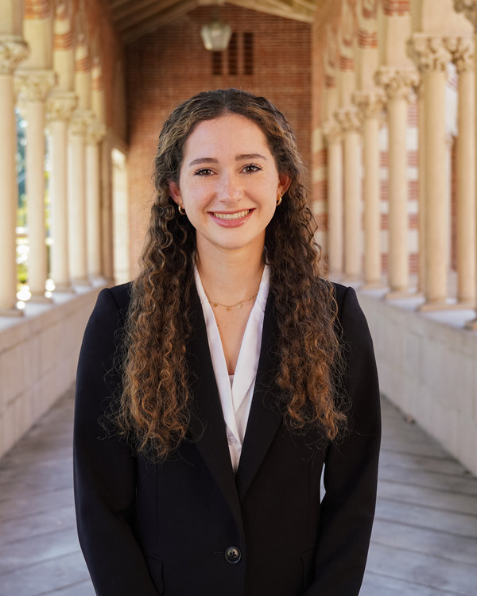
Maddie MullerCo-PresidentCo-Editor-in-Chief. Will not be taking questions.
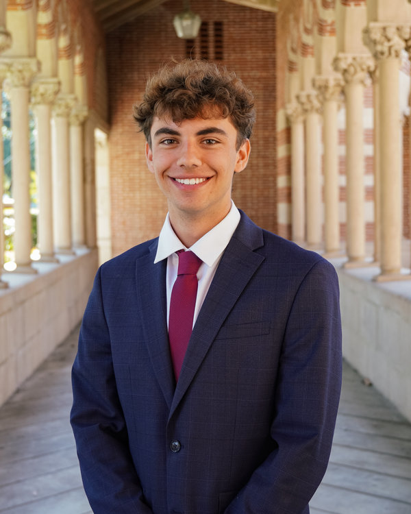
Joaquin PosadaCo-PresidentCo-Editor-in-Chief. Taking all of the questions.
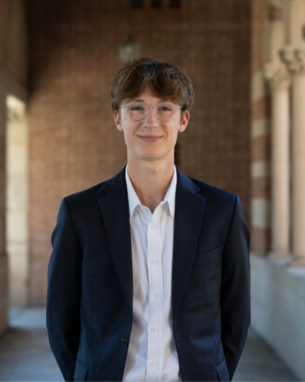
Thomas BouchouVP of EngagementsBureau Chief, Week Eight Silence.
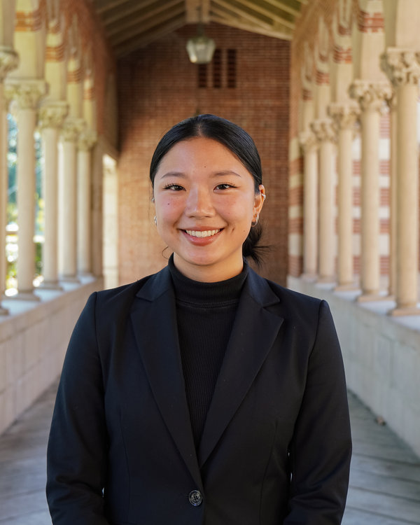
Christina YouVP of Human ResourcesDesk Editor, Coffee Chats That Went Fifty Minutes.
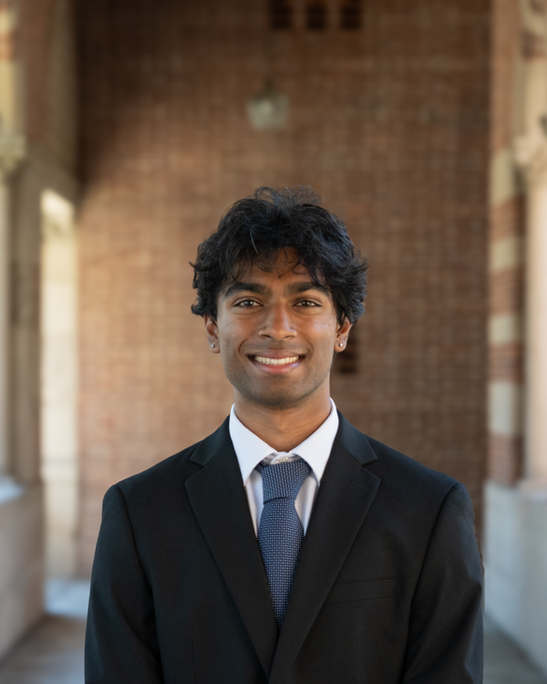
Vishal KaruppasamyVP of Social ImpactImpact Measurement Desk. Currently measuring.
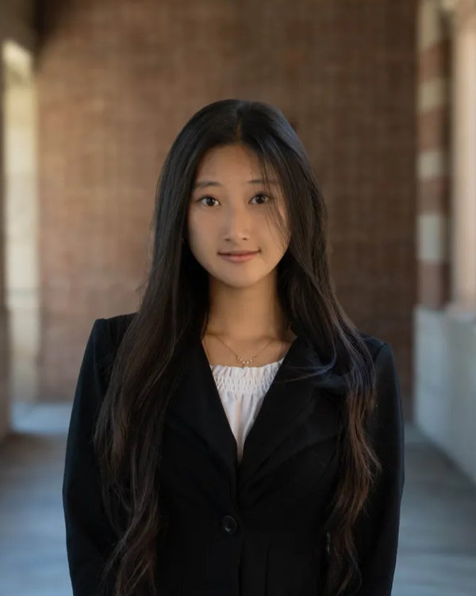
Alinna LiuVP of MarketingArt Director. Sole authority on fonts.
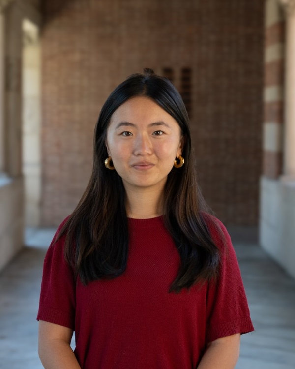
Emily ZhaoVP of FinanceSnacks Desk. The most load-bearing desk.
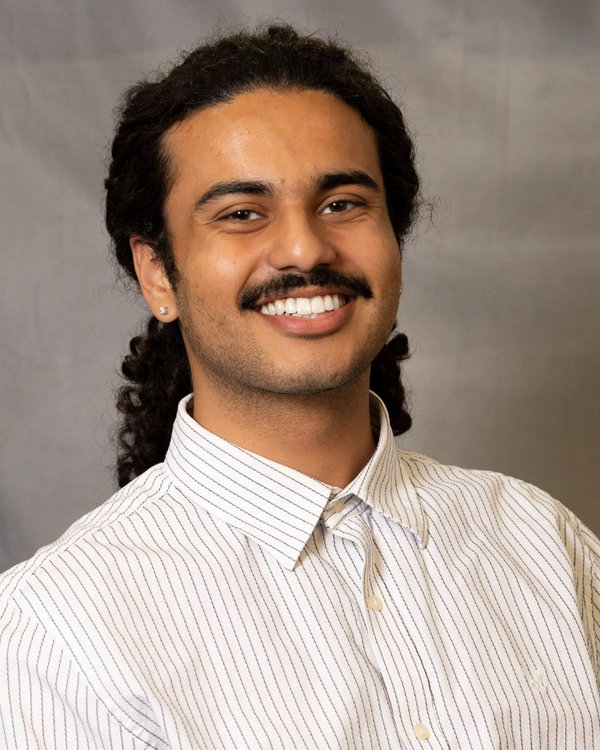
Sameer WasonVP of EventsCorrespondent, Rooms Booked And Rooms Lost.
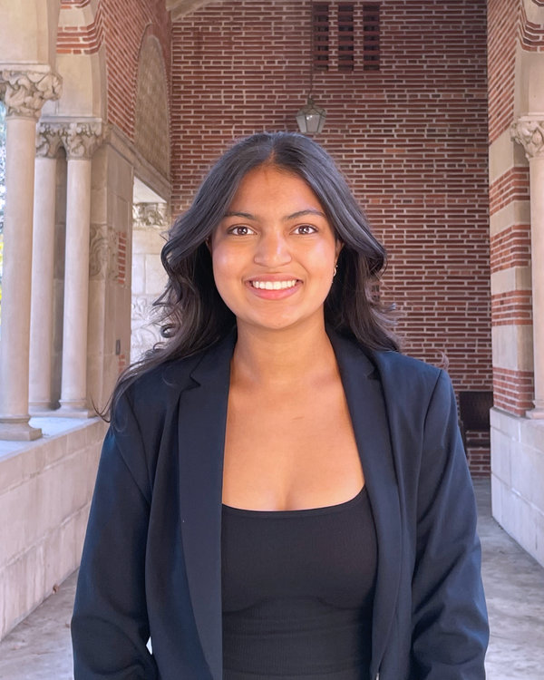
Anya ShahProject ManagerOmbudsman for the Appendix.
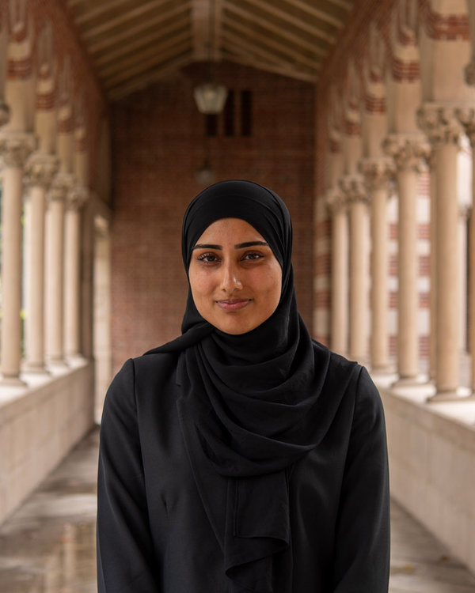
Aqsa JanooProject ManagerSenior Editor, Slide 41.
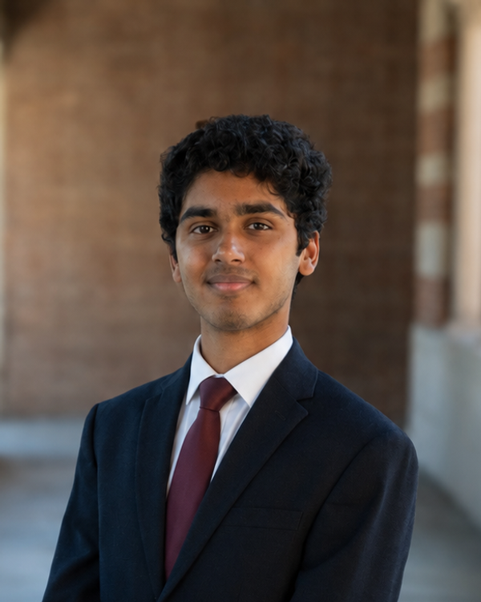
Rohan GeorgeProject ManagerChief of the Google Doc.
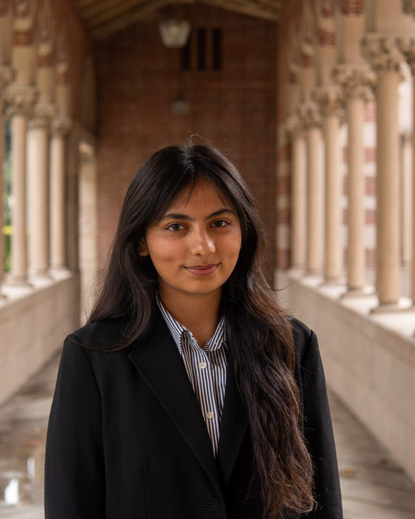
Shifa FayyazProject ManagerRoving Correspondent, Sunday 11 PM to 2 AM.
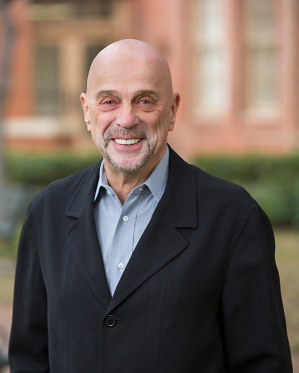
Hank WasiakFaculty AdvisorPublisher Emeritus. Asks one question.